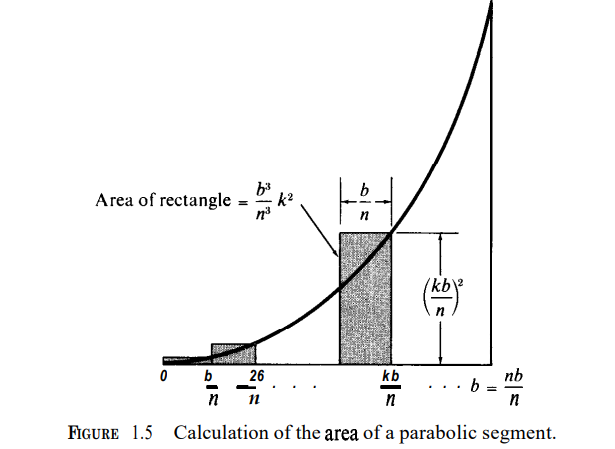

"이제 나는
어떠한 저항도 하지 않기로 결심했다."
1914년 8월 26일, 비트겐슈타인.
논리학
수학
물리학
전산학
컴퓨터공학
매체학
음악
철학
적분을 체계적으로 다루기 전에, 아르키메데스 자신이 다룬 적 있는 특수한 형상에 소진법을 직접 적용하는 편이 교육적일 것이다.
특수한 형상이란 그림 1.3에서 제시되는 것으로, 다음처럼 묘사될 수 있다.
밑변에 임의의 점을 하나 찍은 다음 이를 $0$에서 $x$ 사이의 거리로 표기한다면, 점 $x$에서 곡선 사이의 수직적 거리는 $x^{2}$일 것이다.
특정하면, 밑변 자체의 길이가 $b$일 때, 형상의 높이는 $b^{2}$일 것이다.
$x$에서 곡선까지의 수직적인 거리는 $x$에서의 "세로좌표"(ordinate)라고 불린다.
곡선 자체는 포물선(parabola)이라고 알려진 것의 한 예시다.
이들로 묶인 구역을 바로 포물선 단면(parabolic segment)이라고 한다.
어떻게 이런 결과에 다다를 수 있는지 살필 것이다.

그림 1.3에서 볼 수 있는 것처럼, 이 형상은 $b$의 밑변 길이와 $b^{2}$ 높이를 가진 직사각형으로 에워싸일 수 있다.
그림 상의 실험에 따르면 포물선 단면의 면적은 사각형 면적의 절반보다 작다.
아르키메데스는 포물선 단면 면적이 정확히 $\frac{b^{3}}{3}$이라는 놀라운 사실을 발견한 적 있다.
어떻게 이 결과를 도출할 수 있었는지 살필 것이다.
그림 1.3에서 포물선 면적이 정확히 아르키메데스가 그린대로 나타나지 않았으며 이런저런 세부사항이 다르다는 사실을 지적할 필요가 있겠다.
그런데도 본질적일 발상은 아르키메데스의 것이며, 여기 제시된 것은 현대 표기법으로 쓰인 소진법이다.

방법은 단순하다.
형상을 여러 조각으로 나눠, 밑에서, 또 위에서, 이렇게 두 개의 근사를 얻는 것인데, 바로 그림 1.4에 묘사된 사각형 집합 두 개를 이용하면 된다.
(임의적인 다각형이 아니라 직사각형을 사용하는 이유는 단순한 계산을 위해서다.)
포물선 단면의 면적은 내부 직사각형들의 면적보다 넓고, 외부 직사각형들의 면적보다 좁다.
각 조각이 더 많은 조각으로 나눠 새로운 근사를 얻는다면, 내부 직사각형들의 면적은 증가하고(increases), 외부 직사각형들의 면적은 감소한다(decreases).
아르키메데스는 면적에 관한 임의의 정밀도의 근사란 단순히 충분한 만큼의 조각을 통해 확보될 수 있다는 것을 깨달았다.
이 경우 실질적으로 요구되는 계산을 살펴보자. 단순함을 위해, 우리는 밑변을 $n$개의 동일한($n$ equal) 부분으로, 각각 $\frac{b}{n}$ 길이를 갖게끔 (그림 1.5에 나오는 것처럼) 나눈다.
이렇게 나누게 되는 지점들은 다음과 같은 $x$값에 대응한다.
$$0,\frac{b}{n},\frac{2b}{n},\frac{3b}{n},\ldots,\frac{(n-1)b}{n},\frac{nb}{n}=b$$
나누게 되는 지점들 가운데 특정한 점 하나는 $x=\frac{kb}{n}$에 대응하는데, 여기서 $k$는 $k=0,1,2,3,\ldots,n$의 연속적인 값을 취한다.
그림 1.5에서 볼 수 있는 것처럼, 각 지점인 $\frac{kb}{n}$마다 우리는 $(\frac{kb}{n})^{2}$ 높이의 외부 직사각형을 구축한다.
이 직사각형의 면적은 그 지점에서의 밑변과 높이의 곱이며 다음과 동일하다.
$$\left ( \frac{b}{n} \right )\left ( \frac{kb}{n} \right )^{2}=\frac{b^{3}}{n^{3}}k^{2}.$$
$S_{n}$을 전체 외부 직사각형의 면적의 합으로 표기하자.
$k$번째 직사각형이 $\left ( \frac{b^{3}}{n^{3}} \right )k^{2}$라는 면적을 갖기에, 우리는 다음 공식을 얻는다.
$$ \begin{align} S_{n}=\frac{b^{3}}{n^{3}}(1^{2}+2^{2}+3^{2}+\ldots+n^{2}).\end{align} \tag{1.1} $$
같은 방식으로 우리는 전체 내부 직사각형의 면적의 합인 $s_{n}$을 얻는다.
$$ \begin{align} s_{n}=\frac{b^{3}}{n^{3}}[1^{2}+2^{2}+3^{2}+\ldots+(n-1)^{2}].\end{align} \tag{1.2} $$
이제 계산에서 아주 중요한 단계로 넘어갈 수 있다.
식 $(1.1)$에서 곱해지는 인수가 $n$ 정수들의 제곱들을 합한 것이라는 점에 유의하라.
$$1^{2}+2^{2}+\ldots+n^{2}$$
[식 $(1.2)$도 합이 오직 $n-1$ 정수들의 제곱이라는 점만 빼면 비슷하다.]
큰 값 $n$에 대해, 이와 같은 합 계산을 직접 더하면서 진행하는 것은 지루한 일이다.
다행히 합의 값을 더 쉽게 구할 수 있게 해주는 흥미로운 속성이 있다.
$$1^{2}+2^{2}+\ldots+n^{2}=\frac{n^{3}}{3}+\frac{n^{2}}{2}+\frac{n}{6}.$$
이 속성은 $n\geq 1$인 모든 정수에 대해 타당하고, 다음처럼 증명될 수 있다.
$(k+1)^{3}=k^{3}+3k^{2}+3k+1$에서 시작해 다음 형식으로 재작성하자.
$$3k^{2}+3k+1=(k+1)^{3}-k^{3}.$$
$k=1,2,\ldots,n-1$을 취해, $n-1$개의 공식을 얻는다.
$$ \begin{align} 3\times 1^{2}+3\times 1 + 1 &=2^{3}-1^{3} \\
3\times 2^{2}+3\times 1 + 1 &=2^{3}-1^{3}\\
\vdots \\
3(n-1)^{2}+3(n-1) + 1 &=n^{3}-(n-1)^{3}. \end{align} $$
이 공식들을 더하면, 오른쪽의 항은 두 개만 남고 우리는 다음 식을 얻는다.
$$3[1^{2}+2^{2}+\ldotts+(n-1)^{2}]+3[1+2+\ldots+(n-1)]+(n-1)=n^{3}-1^{3}.$$
왼쪽에서 두 번째 합은 산수적 증가를 합으로 표현한 것이며 $\frac{1}{2}n(n-1)$로 단순화된다.
따라서 마지막 방정식은 우리에게 다음을 부여한다.
$$ \begin{align}1^{2}+2^{2}+\ldots+(n-1)^{2}=\frac{n^{3}}{3}-frac{n^{2}}{2}+\frac{n}{6}. \end{align} \tag{1.4}$$
양변에 $n^{2}$를 더해, $(1.3)$을 얻는다.
우리의 목적에서는, $(1.3)$과 $(1.4)$의 우측에 주어진 정확한 표현식은 사실 쓸모가 없다.
우리에게 필요한 것은 두 부등식(inequalities)뿐이다.
$$ \begin{align}1^{2}+2^{2}+\ldots+(n-1)^{2}<\frac{n^{3}{3}<1^{2}+2^{2}+\ldots+n^{2}. \end{align} \tag{1.5}$$
이는 $n\geq 1$인 모든 정수에 대해 타당하다. 이 부등식들은 $(1.3)$과 $(1.4)$의 결론으로서 쉽게 추론될 수 있다.
아니면 귀납을 통해 직접 증명될 수도 있다.
(귀납 증명은 14.1에서 설명된다.)
$(1.5)$의 부등식에 $\frac{b^{3}}{n^{3}}을 곱한 다음 $(1.1)$과 $(1.2)$를 사용하면 모든 $n$에 대해 다음을 얻는다.
$$ \begin{align} s_{n}<\frac{b^{3}}{3}
$(1.6)$의 부등식은 $\frac{b^{3}{3}이 모든 $n$에 대해 $s_{n}$과 $S_{n}$ 사이의 한 수라고 말한다.
우리는 이제 $b^{3}$이 이 속성을 갖는 단 하나의(only) 숫자라는 점을 증명할 것이다.
달리 말해, 우리는 이렇게 주장할 것이다.
$A$가 모든 $n$에 대한 다음 같은 부등식을 충족하는 임의의 숫자일 때
$$ \begin{align} s_{n}
$A = \frac{b^{3}{3}$이다.
이 사실로 인해 아르키메데스는 포물선 단면의 면적이 $\frac{b^{2}}{3}$이라고 결론 내릴 수 있었다.
$A=\frac{b^{2}}{3}$을 증명하기 위해, 우리는 $(1.5)$의 부등식을 한 번 더 사용할 것이다.
좌측 부등식 양쪽에 $n^{2}$을 더하면, 다음을 얻는다.
$$ 1^{2}+2^{2}+\ldots+<\frac{n^{2}}{3}+n^{2}. $$
여기 $frac{b^{3}}{n^{3}}을 곱한 다음 $(1.1)$을 이용하면, 다음을 알아낸다.
$$ \begin{align} S_{n}<\frac{b^{3}}{3}+\frac{b^{3}}{n}. \end{align} \tag{1.8}$$
유사하게, $(1.5)$ 우측 부등식 양쪽에 $n^{2}$를 빼뺀 다음 $\frac{b^{3},n^{2}}$를 곱하면, 다음 부등식을 얻는다.
$$ \begin{align} \frac{b^{3}{3}-\frac{b^{3}{n}
따라서 $(1.7)$을 만족하는 임의의 숫자는 $n\geq 1$인 모든 정수에 대한 다음 부등식 또한 만족한다.
$$ \begin{align} \frac{b^{3}}{3}-\frac{b^{3}}{n} < A < \frac{b^{3}{3}+\frac{b^{3}}{n}. \end{align} \tag{1.10}$$
이제 세 가지 가능성 뿐이다.
$$ A>\frac{b^{3}}{3},\;A<\frac{b^{3}}{3}\;A=\frac{b^{3}}{3}. $$
앞의 두 부등식이 모순을 유도한다는 점을 보이면, $A=\frac{b^{3}}{3}$을 갖는다.
셜록 홈즈의 방식을 따라, 이는 모든 가능성을 소진시킨다.
부등식 $A>frac{b^{3}}{3}$이 참이라고 가정하라. $(1.10)$의 두 번째 부등식에서 우리는 $n\geq 1$인 모든 정수에 대해 다음을 얻는다.
$$ \begin{align} A-\frac{b^{3}}{3}<\frac{b^{3}}{n}. \end{align} \tag{1.11}$$
$A-\frac{b^{3}}{3}$이 참이기에, 우리는 $(1.11)$의 양변을 $A-\frac{b^{3}}{3}$으로 나눈 다음 이를 $n$으로 곱할 것이다.
모든 $n$에 대해 다음 식을 얻기 위해서다.
$$ n < \frac{b^{3}}{\frac{A-b^{3}}{3}}.$$
하지만 이 부등식은 $n\geq \frac{b^{3}{\frac{A-b^{3}}{3}}$일 때 명백히 거짓이다.
$A > \frac{b^{3}}{3}$이 모순을 유도하기 때문이다.
유사한 논증을 통해 $A < \frac{b^{3}}{3}$ 또한 모순을 유도한다는 점을 증명할 수 있으며, 그렇기에 앞서 주장한 바대로 $A=\frac{b^{3},3}을 갖는다.